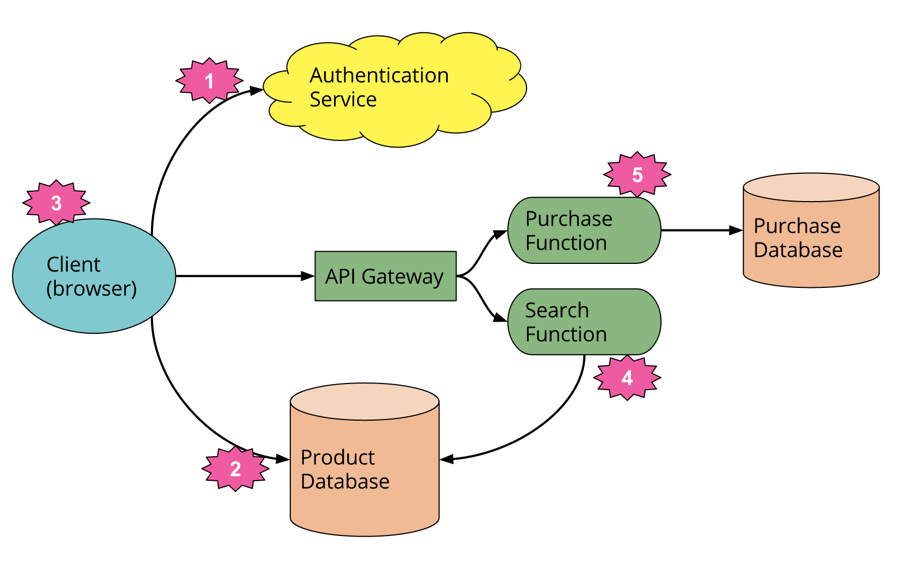

Serverless Architectures
Como o desacoplamento da gestão física de servidores e a computação orientada a eventos transformam a escalabilidade, o modelo de cobrança e a entrega de software.
O artigo Serverless Architectures, elaborado por Mike Roberts, descreve um modelo arquitetural em que os desenvolvedores criam e executam aplicações sem a necessidade de provisionar, configurar ou gerenciar servidores diretamente. Embora a infraestrutura computacional continue existindo, toda a complexidade operacional de balanceamento, manutenção de hardware e atualização do sistema operacional é integralmente delegada ao provedor de nuvem.
A abordagem se apoia fundamentalmente em dois modelos: o uso de serviços prontos de terceiros (BaaS - Backend-as-a-Service) e a execução de blocos de lógica efêmeros disparados por eventos (FaaS - Function-as-a-Service). Com o faturamento estritamente atrelado ao tempo real de processamento, as organizações ganham agilidade para publicar sistemas sem arcar com o custo de máquinas ociosas, embora enfrentem novos desafios de governança e arquitetura.
Trade-offs Arquiteturais
Pontos Fortes
Vantagens da Abordagem
-
Custo Atrelado à Execução Real
Eliminação de gastos com infraestrutura ociosa; a organização é faturada estritamente pelos milissegundos e requisições efetivamente processadas.
-
Elasticidade e Auto-scaling Nativo
A nuvem gerencia o aumento repentino de carga de forma instantánea e automatizada, sem necessidade de configuração prévia de balanceadores ou réplicas.
-
Agilidade e Foco no Negócio
Equipes de desenvolvimento direcionam 100% dos esforços para a lógica dos produtos e endpoints, abstraindo rotinas de manutenção de servidores e patches de segurança.
-
Alta Coesão por Eventos
Funções efêmeras e independentes facilitam a decomposição do domínio em microsserviços reativos desacoplados.
Desafios
Desafios e Limitações
-
Latência de Inicialização (Cold Start)
Atraso perceptível de milissegundos a segundos na primeira chamada ou quando instâncias inativas são reativadas sob demanda.
-
Dependência Crítica do Provedor (Vendor Lock-in)
Fortíssimo acoplamento às APIs, mecanismos de gatilho e regras de segurança proprietárias do provedor de nuvem adotado.
-
Complexidade de Testes e Debug Local
Dificuldade de reproduzir fielmente no computador do desenvolvedor ambientes distribuídos governados por eventos e permissões IAM.
-
Custos Ocultos em Cargas Contínuas
Para sistemas com tráfego previsível, estável e massivo ininterrupto, o custo unitário do serverless pode ser superior ao de instâncias provisionadas dedicadas.
Conceito Central Analisado
A Dinâmica Orientada a Eventos: FaaS e Reações sob Demanda
No paradigma serverless, o ciclo de vida do software é inteiramente acionado por eventos: uma rota HTTP, o upload de um arquivo, uma mensagem em fila ou uma mutação no banco de dados instanciam uma função que executa, produz o resultado e é imediatamente encerrada.
Isso elimina a necessidade de manter clusters inteiros ligados aguardando transações esporádicas. Por outro lado, exige repensar o controle transacional, a segurança de credenciais e a observabilidade das pontas com tracing distribuído.

Impactos na Gestão do Projeto
Cronograma
Prazo
Acelera expressivamente a entrega inicial do MVP ao terceirizar serviços auxiliares (autenticação, banco e storage), reduzindo tarefas de configuração no início do projeto.
Financeiro
Custo
Gera economia substancial em estágios iniciais e aplicações de tráfego variável. No entanto, fluxos contínuos e de carga extrema sem governança podem inflacionar a fatura mensal.
Equipe
Equipe
Permite squads mais enxutas focadas no produto final, mas exige capacitação dos desenvolvedores em arquitetura reativa, controle de concorrência e segurança em nuvem.
Governança
Riscos
Riscos operacionais associados à indisponibilidade de serviços terceiros, limitações de concorrência e custos imprevistos derivados de loops ou falhas em chamadas recursivas.